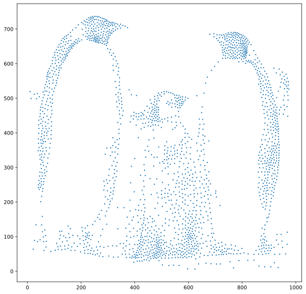
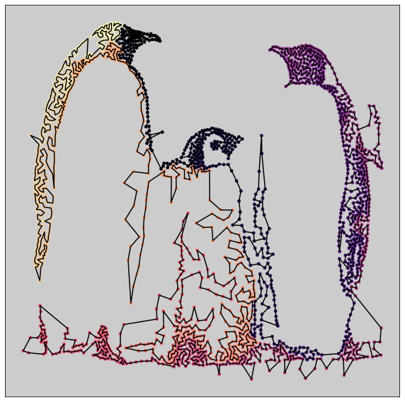
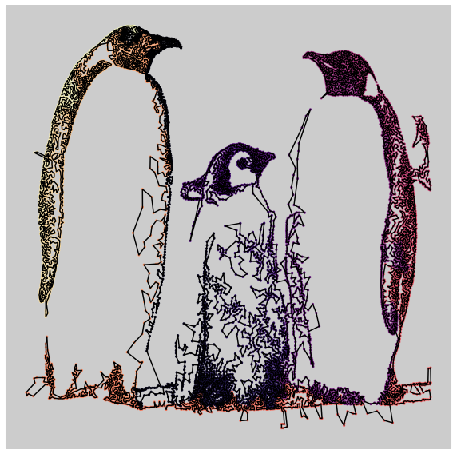
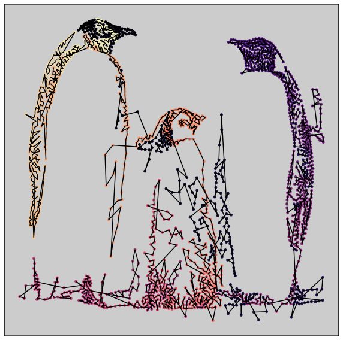

Assignment 6: Traveling Salesperson Art (35 Points)
Chris Tralie
Overview / Logistics
For the last assignment in this class, you will explore an application of minimum spanning trees and depth first search to create computer generated art known as "traveling salesperson art."
Click here to download the starter code. You will have to write all of the code to do a traveling salesperson tour, but I have provided some image processing tools, as well example images.
Google Colab
For those who are having trouble with skimage or numba, you can use Google colab. This will require you to have a Google account setup. Make a new notebook at https://colab.research.google.com/, then load in the notebook at this link. Then, if you put your images in a directory called CS371_S2022/HW6/images, the code should run:
(Of course, you can change the directory paths if you want to, but that's what I did in the above example)
Learning Objectives
- Implement depth first search in python
- Approximate traveling salesperson solutions using minimum spanning trees and the 2-opt heuristic
- Create art programmatically
What To Submit
Background: Traveling Salesperson Art
There's a neat paper by Craig S. Kaplan and Robert Bosch on using the Traveling Salesperson Problem (TSP) to create art (Click here to read the paper). The first step is to use something called "Voronoi Stippling" (see paper here by Adrian Secord) to turn an image into a dot pattern. For instance, let's say we started with the following image of Emperor penguins, courtesy of Christopher Michel

And now let's say we ran the following code in the directory of the starter code
Then we would get this image:

Notice how the dots are more highly concentrated in darker regions of the image. This is what gives us the illusion of shading with just a distribution of dots. Also, as a programmatic note, note that X is an N x 2 array that holds all of the data, with the x coordinates in the first column and the y coordinates in the second column. Hence the slices in plt.scatter(X[:, 0], X[:, 1], 2)
The traveling salesperson art paper goes one step further, though. If we then treat each point as a "city," we can then search for a Traveling salesperson tour (i.e. a permutation of the dots that minimizes the length of the distances between adjacent dots, and between the first and the last dot). Let's suppose we indexed such a permutation with an array tour of indices, and then we ran the following code:
Then we get the following image:
If we use more points, we get an even prettier image, at the expense of more computation time:
Programming Tasks
This assignment will walk you through an approximation algorithm for the traveling salesperson problem. This problem is NP hard, so we can't expect to get a good exact solution. However, we will find an approximate solution to the problem which is provably within a factor of 2 of the best solution, and which is probalby much better in practice. And this will be good enough for artistic applications!
A 2-Approximation with MST DFS (15 Points)
As we noted in class, it is possible to come up with a 2-approximation of the TSP by doing a depth first traversal of the minimum spanning tree of the points in 2D. Review the code here on how to compute an MST of points in 2D efficiently, and then perform the DFS. As an example, here's what you should get on the penguins:
This is not bad for how quick the algorithm is! However, it's clearly not perfect, and in particular, we can see some places where the tour crosses over itself, which is a telltale sign that this is not optimal, because an optimal solution will have no crossings. We will exploit this in the next section to improve this solution.
An Improvement with The 2-Opt Heuristic (15 Points)
One observation we can make to improve our initial guess of a tour is that an optimal solution will never contain a crossing because of the triangle inequality. This is most easily seen visually. The picture below shows how a crossing occurs between the edges between i and i+1 and j and j+1
But we can change this to another traveling salesperson tour by swapping the indices so that we use the edges from i to j and i+1 to j+1 instead of the edges between i and i+1 and j and j+1. This improves the overall tour length because the distances
\[ d(P_i, P_j) + d(P_{i+1}, P_{j+1}) < d(P_i, P_{i+1}) + d(P_j, P_{j+1}) \]
where Pk is the point at index k of the current tour
This flip can be realized by creating a new tour out of the following three chunks, in order:
Swapping Order
- From index
0to indexiin the original tour -
From index
i+1to indexj+1from the original tour in reverse order -
From index
j+1to the end in the original tour
If we repeatedly do this in the penguin example, we see that we improve from the initial MST-based tour which has length 29020.836, to one which has a length of 22838.024, which is quite a big improvement! More importantly for our artistic application, this final tour has no crossings. The animation below shows this process step by step

Your Task
Implement the 2-opt heuristic to improve your MST-based solution. The pseudocode for this is as follows:
-
While an improvement is possible
-
Look through each pair of edges in the current tour until you find a pair i, j where
\[ d(P_i, P_j) + d(P_{i+1}, P_{j+1}) < d(P_i, P_{i+1}) + d(P_j, P_{j+1}) \]
Be sure that i and j are not the first or last points in the tour, as swapping those might mess things up.
- Create a new tour by swapping the edges
-
Look through each pair of edges in the current tour until you find a pair i, j where
You should write a helper method whose job it is to find the next two indices i and j whose edges can be swapped, which you call from within a loop while there are still indices to be swapped. You should use numba with the decorator @jit(nopython=True) above your helper method so that this code runs efficiently. As an example, I'm currently doing this in the get_centroids method of my stippling code. Otherwise, your code will run very slowly.
Another suggestion for speed is to pick up your search at the index i that you swapped last time, and then loop around if necessary.
Mandatory Art Contest (5 Points)
You just made a really cool program to create computer generated art! Use it to create a nice image, which will we show in a gallery for the class (you can use a pseudonym if you don't want your name to be up publicly). We will vote, and the winner will get extra credit! Here are a few suggestions to fine tune things:
-
The parameter
threshto stipple is a variable between 0 and 1 that determines the grayscale level above which to exclude samples. So make this closer to 0 if you only want to include darker parts of the image. -
If you want edges to show up more strongly, play around with the
canny_sigmaparameter - Usually using more points will lead to a prettier drawing, but it will take longer
-
If you're getting some undesirable points in the middle of an otherwise white region, you can filter them out with the
density_filtermethod. For instance,X = density_filter(X, (X.shape[0]-10)/X.shape[0])will filter out the 10 points that are furthest from their nearest neighbor. -
You can change the colormap from
'magma_r'to get different color pattern over time. Click here to see the plethora of options.